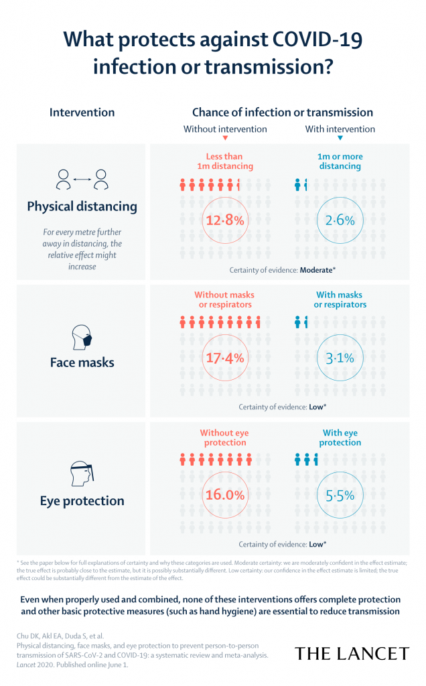

Lingering Symptoms
The most common long-term effect in mild cases is heart damage, occurring at a rate of up to 78%. So, you might have a little heart damage. But for most people the damage doesn't seem to be very severe.
For those patients who eventually fight off the virus and survive the inflammatory assault, an estimated 10 percent are left with months of debilitating symptoms.
As for loss of taste and smell, the good news is that most people recover within a month. But it's persistent in around 10% of cases
32% between ages 35–49 years do not return to their usual state of health 16 days after testing date. source
"I've seen healthy people pretty sick," said Dr. Andrew Reisman, a Gainesville doctor and president of the Medical Association of Georgia. "Not ICU sick, but really sick, like persistent aches and pains and chest pains for six weeks."
doctors at Thomas Jefferson University Hospitals, which operates 14 medical centers in Philadelphia, and New York City-based NYU Langone Health regarding strokes among Covid-19 patients. The doctors said that, over the course of three weeks, they identified 12 patients who were treated for blood blockages in their brains who also tested positive for the new coronavirus. Of those patients, 40% had very few or no risk factors for stroke and were under 50 years old, according to the Post.
Some people, however, say they continue to experience symptoms months after infection. In doctor visits and on social media groups, a growing number of patients report lingering symptoms ranging from mild issues, such as continued loss of taste or smell, to more serious ones, such as heart palpitations, chest pain, shortness of breath, extreme fatigue, cognitive difficulties or recurring fevers. Whether these symptoms eventually resolve or whether they signal permanent damage from the virus remains unknown.
...
However, people with lingering COVID-19 symptoms shouldn't assume they'll stay ill for years, Nath said. "I want to reassure people there is still time for them to get better. Even if they are only gradually improving, if they are getting better at all, they will probably continue to do so."
...
While again it may be too early to tell, in the case of the original SARS outbreak almost half of survivors interviewed more than three years after recovery complained of fatigue.
...
The Centers for Disease Control and Prevention criteria for diagnosis of the chronic fatigue syndrome were met in a quarter of COVID-19 patients. It will likely be important to target mental health interventions to COVID-19 survivors to help them deal with a prolonged convalescence characterized by fatigue.
Most patients with COVID-19 experience a loss of taste and or smell. Only a quarter of patients had noted some improvement in a week’s time, but by 10 days most patients had recovered.
Fatalities
3.2% is the U.S. case fatality rate as of Aug 13.
2.0% is South Korea's. source
8 out of 10 COVID-19 deaths have been those over 65 years old.
{kind=link}
The novel coronavirus has killed more than 210,700 people in the US in eight months, according to Johns Hopkins University.
The flu killed an estimated 22,000 people in the US during the last flu season, according to the US Centers for Disease Control and Prevention.
If 22,000 people died between October 1 and May 31, that would be an average of about 91 flu deaths a day over the span of eight months.
About 92% of people who have died from the illness had underlying health conditions, a percentage that has remained constant throughout the pandemic. Ferrer noted that while that percentage is high, it still means that 8% of people had no health issues and still died from the disease.
Protection Estimates

Asymptomatic People
According to some estimates, between 40% to 45% of people who become infected with the coronavirus experience no symptoms of Covid-19, the disease caused by the coronavirus.
Note on Data
The New York Times, the Washington Post, and many other news agencies have reported stories showing that the tally of COVID-19 deaths in the United States and elsewhere in the world is almost certainly an undercount. They cite epidemiological data showing that the overall numbers of deaths during the months of this pandemic have far outpaced the death rate during the same period in recent past years, and postulate that the lack of available testing might be a reason why COVID-19 would not make it onto a death certificate.
There is disagreement on forecasts, especially Johns Hopkins. (Click Forecasts, then select county from drop-down.)
Ascertainment Bias
Using notion that if South Korea has an ascertainment bias of 1, and assuming that deaths are accurately marked as from COVID-19, then we use the relative death rates between the two to determine the ascertainment bias.
These are gross assumptions, though, because deaths are underreported.
Los Angeles Stats
From 55% to 59% less cases reported in West LA SPA 5 versus LA County as a whole, starting from Jul 1 to Aug 13
{kind=link}
{kind=link}
In Los Angeles County, the effective transmission rate of the coronavirus is now about 0.86 — meaning that every one infected person passes the virus to an average of 0.86 other people. Last week, the rate was at 0.91.
...
Dr. Grant Colfax, San Francisco’s health director, said the transmission rate there was between 0.95 and 0.98 for the previous few days.
source — Aug 13
For an event of size 10, ascertainment bias of 10 (i.e. there exists 10x more cases than being reported), then as of Aug 13, Los Angeles County has a 27% chance that at least one person will have it. Whereas in SF County it's 17%. (source)
In the last 14 days (Aug 13), LA County had 30,277 cases (300 cases per 100k), and 613 deaths (6.1 deaths per 100k), versus SF County's 175 cases per 100k and 1 death per 100k. (source)